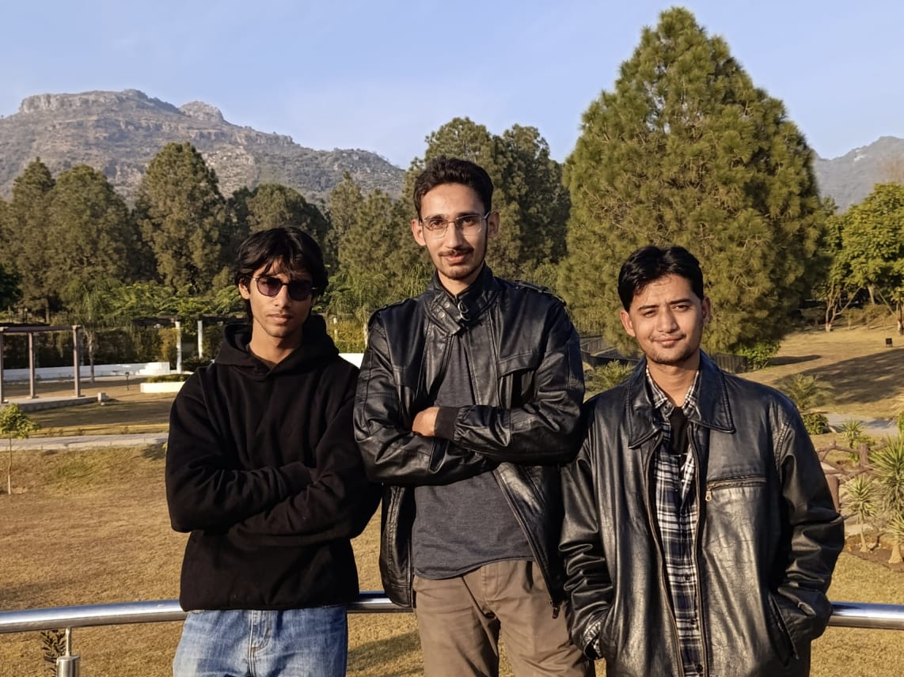

Our Goal
We are a dedicated team of ICT students passionate about leveraging technology to create innovative
solutions.
Our project, Artemis, is designed to bring ease of work using intelligent features and seamless interaction
system of LLM (Large Language Model) technology.
Especially in today's fast-paced world, we believe that integrating AI into daily tasks can significantly
enhance productivity and user experience fully availing what technology has to offer in our present day and
age.
Through Artemis, we aim to provide users with a reliable digital assistant that can help manage tasks,
answer questions, and offer personalized recommendations.
Our Team
Our team consists of three passionate ICT students:

Amaan Bhatti, Salman Arif, Taha Ziafat (Respectively)
- Salman Arif - I am an IT student at Bahria University Islamabad Campus currently
pursuing my undergraduate degree.
- Taha Ziafat - I am an IT student at Bahria University Islamabad Campus currently
pursuing my undergraduate degree. I have a knack of exploring stuff related to technology and learning
tons of new things. I am a chaos-powered tech enthusiast who somehow manages to write working code. I
love solving problems, learning new things, and occasionally fumbling my way into success.
- Amaan Bhatti - I am an IT Student at Bahria University Islamabad Campus currently
pursuing my undergraduate degree. I love computers and everything related to them or about them which
fuels my passion to learn and grow my career to something I can be proud of.